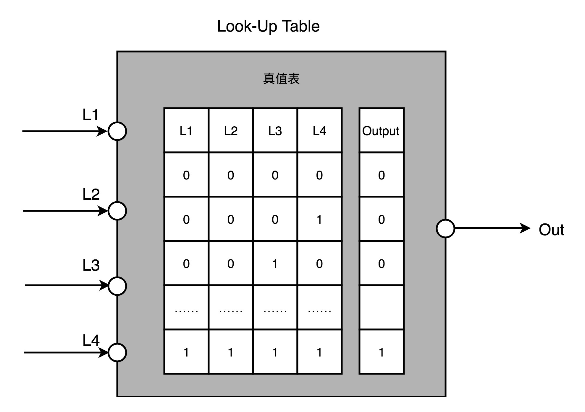
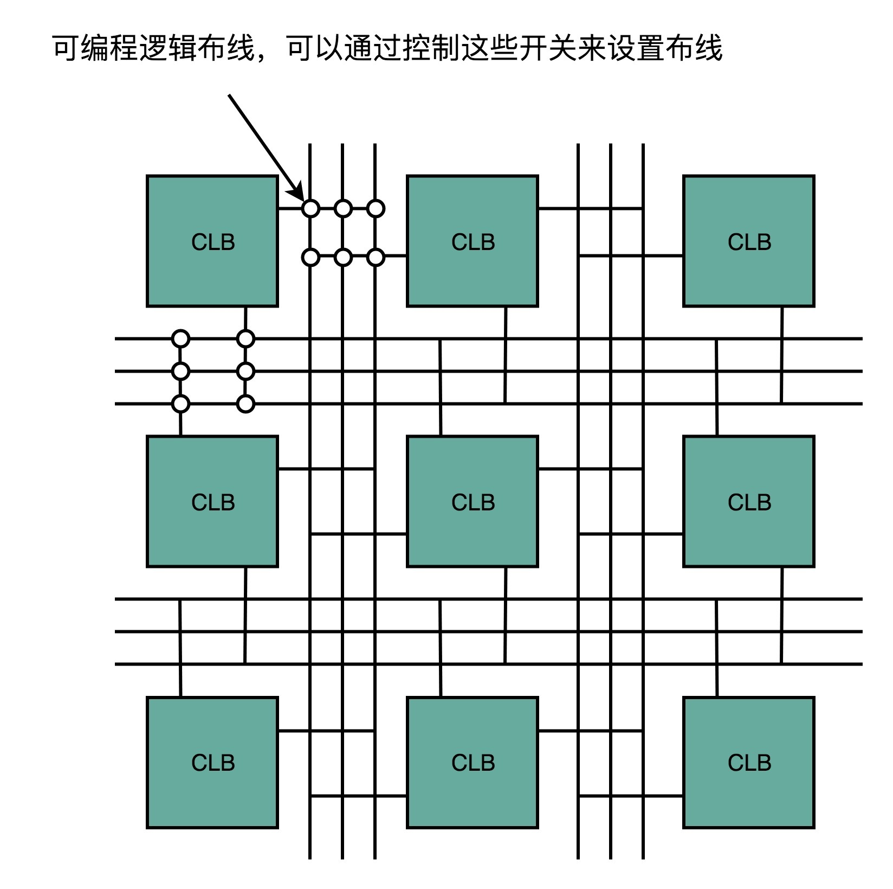
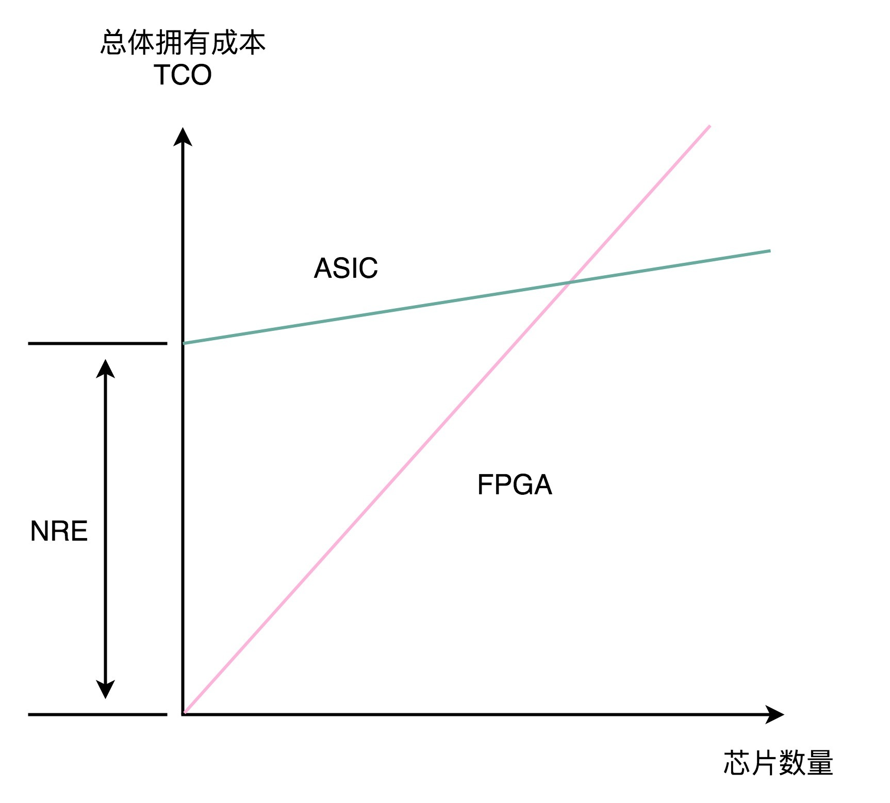

- 00 开篇词 为什么你需要学习计算机组成原理？.md.html
- 01 冯·诺依曼体系结构：计算机组成的金字塔.md.html
- 02 给你一张知识地图，计算机组成原理应该这么学.md.html
- 03 通过你的CPU主频，我们来谈谈“性能”究竟是什么？.md.html
- 04 穿越功耗墙，我们该从哪些方面提升“性能”？.md.html
- 05 计算机指令：让我们试试用纸带编程.md.html
- 06 指令跳转：原来if...else就是goto.md.html
- 07 函数调用：为什么会发生stack overflow？.md.html
- 08 ELF和静态链接：为什么程序无法同时在Linux和Windows下运行？.md.html
- 09 程序装载：“640K内存”真的不够用么？.md.html
- 10 动态链接：程序内部的“共享单车”.md.html
- 11 二进制编码：“手持两把锟斤拷，口中疾呼烫烫烫”？.md.html
- 12 理解电路：从电报机到门电路，我们如何做到“千里传信”？.md.html
- 13 加法器：如何像搭乐高一样搭电路（上）？.md.html
- 14 乘法器：如何像搭乐高一样搭电路（下）？.md.html
- 15 浮点数和定点数（上）：怎么用有限的Bit表示尽可能多的信息？.md.html
- 16 浮点数和定点数（下）：深入理解浮点数到底有什么用？.md.html
- 17 建立数据通路（上）：指令加运算=CPU.md.html
- 18 建立数据通路（中）：指令加运算=CPU.md.html
- 19 建立数据通路（下）：指令加运算=CPU.md.html
- 20 面向流水线的指令设计（上）：一心多用的现代CPU.md.html
- 21 面向流水线的指令设计（下）：奔腾4是怎么失败的？.md.html
- 22 冒险和预测（一）：hazard是“危”也是“机”.md.html
- 23 冒险和预测（二）：流水线里的接力赛.md.html
- 24 冒险和预测（三）：CPU里的“线程池”.md.html
- 25 冒险和预测（四）：今天下雨了，明天还会下雨么？.md.html
- 26 Superscalar和VLIW：如何让CPU的吞吐率超过1？.md.html
- 27 SIMD：如何加速矩阵乘法？.md.html
- 28 异常和中断：程序出错了怎么办？.md.html
- 29 CISC和RISC：为什么手机芯片都是ARM？.md.html
- 30 GPU（上）：为什么玩游戏需要使用GPU？.md.html
- 31 GPU（下）：为什么深度学习需要使用GPU？.md.html
- 32 FPGA、ASIC和TPU（上）：计算机体系结构的黄金时代.md.html
- 33 解读TPU：设计和拆解一块ASIC芯片.md.html
- 34 理解虚拟机：你在云上拿到的计算机是什么样的？.md.html
- 35 存储器层次结构全景：数据存储的大金字塔长什么样？.md.html
- 36 局部性原理：数据库性能跟不上，加个缓存就好了？.md.html
- 37 理解CPU Cache（上）：“4毫秒”究竟值多少钱？.md.html
- 38 高速缓存（下）：你确定你的数据更新了么？.md.html
- 39 MESI协议：如何让多核CPU的高速缓存保持一致？.md.html
- 40 理解内存（上）：虚拟内存和内存保护是什么？.md.html
- 41 理解内存（下）：解析TLB和内存保护.md.html
- 42 总线：计算机内部的高速公路.md.html
- 43 输入输出设备：我们并不是只能用灯泡显示“0”和“1”.md.html
- 44 理解IO_WAIT：IO性能到底是怎么回事儿？.md.html
- 45 机械硬盘：Google早期用过的“黑科技”.md.html
- 46 SSD硬盘（上）：如何完成性能优化的KPI？.md.html
- 47 SSD硬盘（下）：如何完成性能优化的KPI？.md.html
- 48 DMA：为什么Kafka这么快？.md.html
- 49 数据完整性（上）：硬件坏了怎么办？.md.html
- 50 数据完整性（下）：如何还原犯罪现场？.md.html
- 51 分布式计算：如果所有人的大脑都联网会怎样？.md.html
- 52 设计大型DMP系统（上）：MongoDB并不是什么灵丹妙药.md.html
- 53 设计大型DMP系统（下）：SSD拯救了所有的DBA.md.html
- 54 理解Disruptor（上）：带你体会CPU高速缓存的风驰电掣.md.html
- 55 理解Disruptor（下）：不需要换挡和踩刹车的CPU，有多快？.md.html
- 结束语 知也无涯，愿你也享受发现的乐趣.md.html
32 FPGA、ASIC和TPU（上）：计算机体系结构的黄金时代
过去很长一段时间里，大家在讲到高科技、互联网、信息技术的时候，谈的其实都是“软件”。从 1995 年微软发布 Windows 95 开始，高科技似乎就等同于软件业和互联网。著名的风险投资基金 Andreessen Horowitz 的合伙人 Marc Andreessen，在 2011 年发表了一篇博客，声称“Software is Eating the World”。Marc Andreessen，不仅是投资人，更是 Netscape 的创始人之一。他当时的搭档就是我们在前两讲提过的 SGI 创始人 Jim Clark。
的确，过去 20 年计算机工业界的中心都在软件上。似乎硬件对大家来说，慢慢变成了一个黑盒子。虽然必要，但却显得有点无关紧要。
不过，在上世纪 70～80 年代，计算机的世界可不是这样的。那个时候，计算机工业届最激动人心的，是层出不穷的硬件。无论是 Intel 的 8086，还是摩托罗拉的 68000，这样用于个人电脑的 CPU，还是直到今天大家还会提起的 Macintosh，还有史上最畅销的计算机 Commodore 64，都是在那个时代被创造出来的。
电视剧 Halt and Catch Fire，灵感应该就是来自第一台笔记本电脑 Compaq Portable 的诞生
不过，随着计算机主频提升越来越困难。这几年，计算机硬件又进入了一个新的、快速发展的时期。
从树莓派基金会这样的非盈利组织开发 35 美元的单片机，到 Google 这样的巨头为了深度学习专门开发出来的 TPU，新的硬件层出不穷，也无怪乎 David Patterson 老爷爷，去年在拿图灵奖之后专门发表讲话，说计算机体系结构又进入了一个黄金时代。那今天我就带你一起来看看，FPGA 和 ASIC 这两个最近比较时髦的硬件发展。
FPGA
之前我们讲解 CPU 的硬件实现的时候说过，其实 CPU 其实就是一些简单的门电路像搭积木一样搭出来的。从最简单的门电路，搭建成半加器、全加器，然后再搭建成完整功能的 ALU。这些电路里呢，有完成各种实际计算功能的组合逻辑电路，也有用来控制数据访问，创建出寄存器和内存的时序逻辑电路。如果你对这块儿内容印象不深，可以回顾一下第 12 讲到第 14 讲的内容，以及第 17 讲的内容。
好了，那现在我问你一个问题，在我们现代 CPU 里面，有多少个晶体管这样的电路开关呢？这个答案说出来有点儿吓人。一个四核 i7 的 Intel CPU，上面的晶体管数量差不多有 20 亿个。那接着问题就来了，我们要想设计一个 CPU，就要想办法连接这 20 亿个晶体管。
这已经够难了，后面还有更难的。就像我们写程序一样，连接晶体管不是一次就能完事儿了的。设计更简单一点儿的专用于特定功能的芯片，少不了要几个月。而设计一个 CPU，往往要以“年”来计。在这个过程中，硬件工程师们要设计、验证各种各样的技术方案，可能会遇到各种各样的 Bug。如果我们每次验证一个方案，都要单独设计生产一块芯片，那这个代价也太高了。
我们有没有什么办法，不用单独制造一块专门的芯片来验证硬件设计呢？能不能设计一个硬件，通过不同的程序代码，来操作这个硬件之前的电路连线，通过“编程”让这个硬件变成我们设计的电路连线的芯片呢？

{kind=link}
XILINX 的 FPGA 芯片
这个，就是我们接下来要说的 FPGA，也就是现场可编程门阵列（Field-Programmable Gate Array）。看到这个名字，你可能要说了，这里面每个单词单独我都认识，放到一起就不知道是什么意思了。
没关系，我们就从 FPGA 里面的每一个字符，一个一个来看看它到底是什么意思。
- P 代表 Programmable，这个很容易理解。也就是说这是一个可以通过编程来控制的硬件。
- G 代表 Gate 也很容易理解，它就代表芯片里面的门电路。我们能够去进行编程组合的就是这样一个一个门电路。
- A 代表的 Array，叫作阵列，说的是在一块 FPGA 上，密密麻麻列了大量 Gate 这样的门电路。
- 最后一个 F，不太容易理解。它其实是说，一块 FPGA 这样的板子，可以进行在“现场”多次地进行编程。它不像 PAL（Programmable Array Logic，可编程阵列逻辑）这样更古老的硬件设备，只能“编程”一次，把预先写好的程序一次性烧录到硬件里面，之后就不能再修改了。
这么看来，其实“FPGA”这样的组合，基本上解决了我们前面说的想要设计硬件的问题。我们可以像软件一样对硬件编程，可以反复烧录，还有海量的门电路，可以组合实现复杂的芯片功能。
不过，相信你和我一样好奇，我们究竟怎么对硬件进行编程呢？我们之前说过，CPU 其实就是通过晶体管，来实现各种组合逻辑或者时序逻辑。那么，我们怎么去“编程”连接这些线路呢？
FPGA 的解决方案很精巧，我把它总结为这样三个步骤。
**第一，用存储换功能实现组合逻辑。**在实现 CPU 的功能的时候，我们需要完成各种各样的电路逻辑。在 FPGA 里，这些基本的电路逻辑，不是采用布线连接的方式进行的，而是预先根据我们在软件里面设计的逻辑电路，算出对应的真值表，然后直接存到一个叫作 LUT（Look-Up Table，查找表）的电路里面。这个 LUT 呢，其实就是一块存储空间，里面存储了“特定的输入信号下，对应输出 0 还是 1”。

如果还没理解，你可以想一下这个问题。假如现在我们要实现一个函数，这个函数需要返回斐波那契数列的第 N 项，并且限制这个 N 不会超过 100。该怎么解决这个问题呢？
斐波那契数列的通项公式是 f(N) = f(N-1) + f(N-2) 。所以，我们的第一种办法，自然是写一个程序，从第 1 项开始算。但其实还有一种办法，就是我们预先用程序算好斐波那契数量前 100 项，然后把它预先放到一个数组里面。这个数组就像 [1, 1, 2, 3, 5…] 这样。当要计算第 N 项的时候呢，我们并不是去计算得到结果，而是直接查找这个数组里面的第 N 项。
这里面的关键就在于，这个查表的办法，不只能够提供斐波那契数列。如果我们要有一个获得 N 的 5 次方的函数，一样可以先计算好，放在表里面进行查询。这个“查表”的方法，其实就是 FPGA 通过 LUT 来实现各种组合逻辑的办法。
**第二，对于需要实现的时序逻辑电路，我们可以在 FPGA 里面直接放上 D 触发器，作为寄存器。**这个和 CPU 里的触发器没有什么本质不同。不过，我们会把很多个 LUT 的电路和寄存器组合在一起，变成一个叫作逻辑簇（Logic Cluster）的东西。在 FPGA 里，这样组合了多个 LUT 和寄存器的设备，也被叫做 CLB（Configurable Logic Block，可配置逻辑块）。
我们通过配置 CLB 实现的功能有点儿像我们前面讲过的全加器。它已经在最基础的门电路上做了组合，能够提供更复杂一点的功能。更复杂的芯片功能，我们不用再从门电路搭起，可以通过 CLB 组合搭建出来。

**第三，FPGA 是通过可编程逻辑布线，来连接各个不同的 CLB，最终实现我们想要实现的芯片功能。**这个可编程逻辑布线，你可以把它当成我们的铁路网。整个铁路系统已经铺好了，但是整个铁路网里面，设计了很多个道岔。我们可以通过控制道岔，来确定不同的列车线路。在可编程逻辑布线里面，“编程”在做的，就是拨动像道岔一样的各个电路开关，最终实现不同 CLB 之间的连接，完成我们想要的芯片功能。
于是，通过 LUT 和寄存器，我们能够组合出很多 CLB，而通过连接不同的 CLB，最终有了我们想要的芯片功能。最关键的是，这个组合过程是可以“编程”控制的。而且这个编程出来的软件，还可以后续改写，重新写入到硬件里。让同一个硬件实现不同的芯片功能。从这个角度来说，FPGA 也是“软件吞噬世界”的一个很好的例子。
ASIC
除了 CPU、GPU，以及刚刚的 FPGA，我们其实还需要用到很多其他芯片。比如，现在手机里就有专门用在摄像头里的芯片；录音笔里会有专门处理音频的芯片。尽管一个 CPU 能够处理好手机拍照的功能，也能处理好录音的功能，但是在我们直接在手机或者录音笔里塞上一个 Intel CPU，显然比较浪费。
于是，我们就考虑为这些有专门用途的场景，单独设计一个芯片。这些专门设计的芯片呢，我们称之为ASIC（Application-Specific Integrated Circuit），也就是专用集成电路。事实上，过去几年，ASIC 发展得仍旧特别快。因为 ASIC 是针对专门用途设计的，所以它的电路更精简，单片的制造成本也比 CPU 更低。而且，因为电路精简，所以通常能耗要比用来做通用计算的 CPU 更低。而我们上一讲所说的早期的图形加速卡，其实就可以看作是一种 ASIC。
因为 ASIC 的生产制造成本，以及能耗上的优势，过去几年里，有不少公司设计和开发 ASIC 用来“挖矿”。这个“挖矿”，说的其实就是设计专门的数值计算芯片，用来“挖”比特币、ETH 这样的数字货币。
那么，我们能不能用刚才说的 FPGA 来做 ASIC 的事情呢？当然是可以的。我们对 FPGA 进行“编程”，其实就是把 FPGA 的电路变成了一个 ASIC。这样的芯片，往往在成本和功耗上优于需要做通用计算的 CPU 和 GPU。
那你可能又要问了，那为什么我们干脆不要用 ASIC 了，全都用 FPGA 不就好了么？你要知道，其实 FPGA 一样有缺点，那就是它的硬件上有点儿“浪费”。这个很容易理解，我一说你就明白了。
每一个 LUT 电路，其实都是一个小小的“浪费”。一个 LUT 电路设计出来之后，既可以实现与门，又可以实现或门，自然用到的晶体管数量，比单纯连死的与门或者或门的要多得多。同时，因为用的晶体管多，它的能耗也比单纯连死的电路要大，单片 FPGA 的生产制造的成本也比 ASIC 要高不少。
当然，有缺点就有优点，FPGA 的优点在于，它没有硬件研发成本。ASIC 的电路设计，需要仿真、验证，还需要经过流片（Tape out），变成一个印刷的电路版，最终变成芯片。这整个从研发到上市的过程，最低花费也要几万美元，高的话，会在几千万乃至数亿美元。更何况，整个设计还有失败的可能。所以，如果我们设计的专用芯片，只是要制造几千片，那买几千片现成的 FPGA，可能远比花上几百万美元，来设计、制造 ASIC 要经济得多。
实际上，到底使用 ASIC 这样的专用芯片，还是采用 FPGA 这样可编程的通用硬件，核心的决策因素还是成本。不过这个成本，不只是单个芯片的生产制造成本，还要考虑总体拥有成本（Total Cost of Ownership），也就是说，除了生产成本之外，我们要把研发成本也算进去。如果我们只制造了一片芯片，那么成本就是“这枚芯片的成本 + 为了这枚芯片建的生产线的成本 + 芯片的研发成本”，而不只是“芯片的原材料沙子的成本 + 生产的电费”。
单个 ASIC 的生产制造成本比 FPGA 低，ASIC 的能耗也比能实现同样功能的 FPGA 要低。能耗低，意味着长时间运行这些芯片，所用的电力成本也更低。
但是，ASIC 有一笔很高的 NRE（Non-Recuring Engineering Cost，一次性工程费用）成本。这个成本，就是 ASIC 实际“研发”的成本。只有需要大量生产 ASIC 芯片的时候，我们才能摊薄这份研发成本。

其实，在我们的日常软件开发过程中，也需要做同样的决策。很多我们需要的功能，可能在市面上已经有开源的软件可以实现。我们可以在开源的软件之上做配置或者开发插件，也可以选择自己从头开始写代码。
在开源软件或者是买来的商业软件上启动，往往能很快让产品上线。如果从头开始写代码，往往会有一笔不地的 NRE 成本，也就是研发成本。但是通常我们自己写的代码，能够 100% 贴近我们的业务需求，后续随着业务需求的改造成本会更低。如果要大规模部署很多服务器的话，服务器的成本会更低。学会从 TCO 和 NRE 的成本去衡量做决策，也是每一个架构师的必修课。
总结延伸
好了，这一讲里，我为你介绍了 FPGA 和 ASIC 这两种近年来非常时髦的芯片。
FPGA 本质上是一个可以通过编程，来控制硬件电路的芯片。我们通过用 LUT 这样的存储设备，来代替需要的硬连线的电路，有了可编程的逻辑门，然后把很多 LUT 和寄存器放在一起，变成一个更复杂的逻辑电路，也就是 CLB，然后通过控制可编程布线中的很多开关，最终设计出属于我们自己的芯片功能。FPGA，常常被我们用来进行芯片的设计和验证工作，也可以直接拿来当成专用的芯片，替换掉 CPU 或者 GPU，以节约成本。
相比 FPGA，ASIC 在“专用”上更进一步。它是针对特定的使用场景设计出来的芯片，比如，摄像头、音频、“挖矿”或者深度学习。虽然 ASIC 的研发成本高昂，但是生产制造成本和能耗都很低。所以，对于有大量需求的专用芯片，用 ASIC 是很划得来的。而在 FPGA 和 ASIC 之间进行取舍，就要看两者的整体拥有成本哪一个更低了。
专用芯片的故事我们还没有讲完，下一讲，我们来看看 Google 开发的 TPU，这个近两年最知名的 ASIC 芯片的故事。
推荐阅读
既然用了 David Patterson 老爷爷的“黄金时代”作为这一讲的标题，那么他的这篇讲话不可不读。我在文稿里留下了对应的文章链接，你也可以在网络上看对应的讲话视频和 PPT。